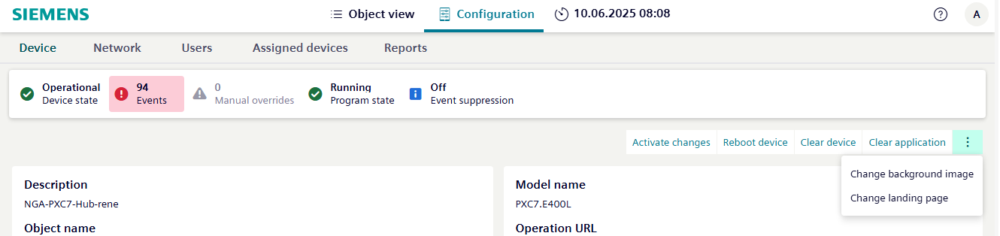
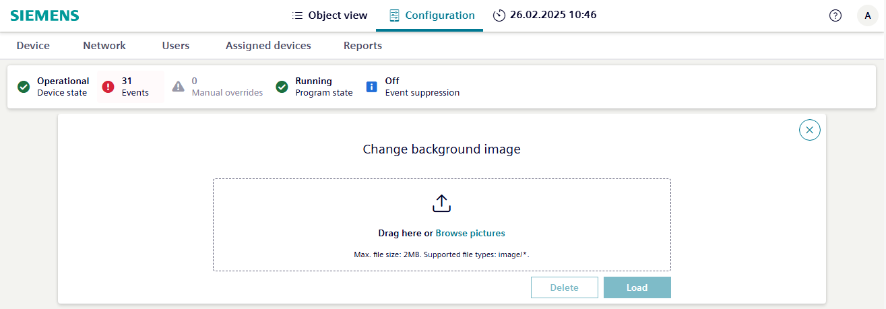

Changing picture on the landing page
Use this procedure to update the background image that displays on the landing page. The file type must be a .jpg, .jpeg, or .png, and cannot be larger than 2 MB.
- You are logged in as an administrator.
- Go to the Configuration tab.
- Select the Device tab.

- Select and then select Change background image.

- Drag the custom picture into the Change background images dialog box or select Browse picture.
- Select Upload.
- The background image has been updated and will display upon your next login.
- Repeat these steps for all devices.
Delete changed background image
An image can only be deleted with the Clear device function. For all other ABT Site functions, the modified image remains.
- Factory reset = removes the changed image
- Clear device = removes the changed image
- Clear application = updated image remains
- Firmware load = updated image remains
- Full load = updated image remains
- Delta load = updated image remains
- Upload to ABT Site = does not have any impact on other devices